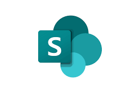

OpenCode Orchestrator Kit
A cost-aware, multi-agent orchestration framework for OpenCode CLI. Organizes automated engineering tasks into specialized explorer, planner, and builder roles while tracking token budgets and model efficiency.
Software Creator & Automation Engineer specializing in modern backend architectures (.NET / C#), agentic workflow orchestration, and scalable cloud solutions.
Architecting resilient software solutions with a focus on system reliability, automated pipelines, and AI agent orchestration:
Building scalable web APIs, microservices, and robust backend services using C# and .NET with clean architecture and SOLID principles.
Designing cost-aware multi-agent workflows (Explorer, Planner, Builder) with optimized context windows, prompt routing, and CLI tool integrations.
Developing enterprise automation pipelines and batch utilities using PowerShell, Python, and shell scripting to streamline complex DevOps operations.
Automating CI/CD deployment pipelines, Microsoft Azure / DevOps infrastructure management, and secure backup strategies for cloud environments.
A cost-aware, multi-agent orchestration framework for OpenCode CLI. Organizes automated engineering tasks into specialized explorer, planner, and builder roles while tracking token budgets and model efficiency.
A high-performance console application built to discover and back up Git repositories across Azure DevOps organizations, featuring robust error handling and automated scheduling.

Enterprise PowerShell automation tool designed to systematically export and back up SharePoint Online site collections, document libraries, and configuration state.
Automated script orchestration suite for deploying and executing statistical R batch workloads on Linux CentOS environments.
Discover additional open-source tools, API integrations, and ongoing software architecture prototypes on GitHub.
Feel free to reach out for technical collaboration, software development opportunities, or architectural discussions.